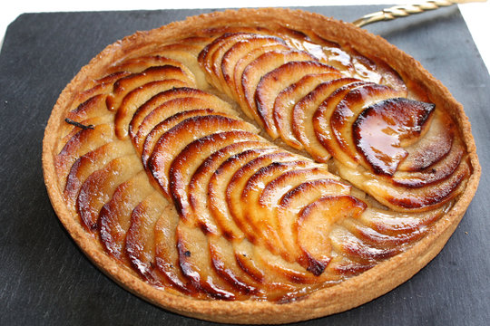

Tarte aux pommes
Ingrédients
- 200g de farine
- 100g de beurre
- 100g de sucre
- 4 pommes
- 1 œuf
- 1 pincée de sel
Étapes de préparation
- Préchauffez le four à 180°C.
- Mélangez la farine, le beurre, le sucre et l'œuf pour former une pâte.
- Étalez la pâte dans un moule à tarte.
- Disposez les pommes coupées en tranches sur la pâte.
- Saupoudrez de sucre et enfournez pendant 40 minutes.
- Laissez refroidir avant de servir.